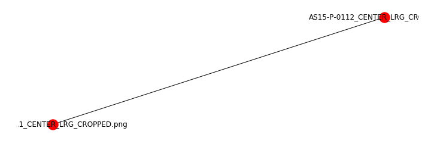

Creating the CandidateGraph Object¶
[41]:
import os
import sys
sys.path.insert(0, os.path.abspath('/data/autocnet'))
from autocnet import CandidateGraph
%pylab inline
figsize(12,4)
Populating the interactive namespace from numpy and matplotlib
/home/jlaura/anaconda3/envs/autocnet/lib/python3.5/site-packages/IPython/core/magics/pylab.py:161: UserWarning: pylab import has clobbered these variables: ['shape']
`%matplotlib` prevents importing * from pylab and numpy
"\n`%matplotlib` prevents importing * from pylab and numpy"
Which Apollo Pan images?¶
The first question to ask is which images to use. Without good geospatial information, using 5, ~2GB each, raw images is not practical for a number of reasons (memory constraints, lack of a priori information to constrain the search space, ambiguity in overlap requiring human intervention). The JP2000 option is attractive (and viable), but image sizes of >6GB are also concerning from a memory perspective. Therefore, the highest resolution png images were selected. These were then cropped in
GIMP to the extent of the valid data. The scans are not perfectly square resulting in some black border remaining at some corners. This should not be an issue.
[126]:
a = 'AS15-P-0111_CENTER_LRG_CROPPED.png'
b = 'AS15-P-0112_CENTER_LRG_CROPPED.png'
adj = {a:[b],
b:[a]}
cg = CandidateGraph.from_adjacency(adj)
[127]:
cg.plot(labels=True)
[127]:
<matplotlib.axes._subplots.AxesSubplot at 0x7fe16f80df60>
